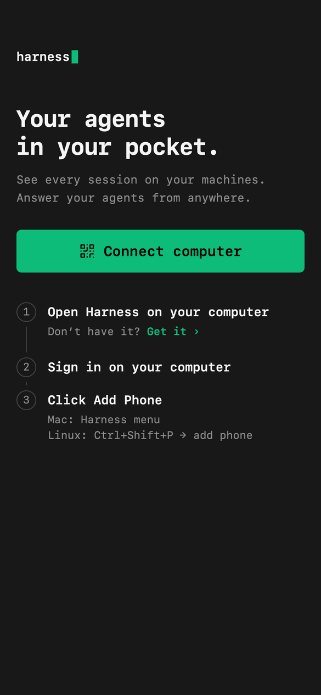
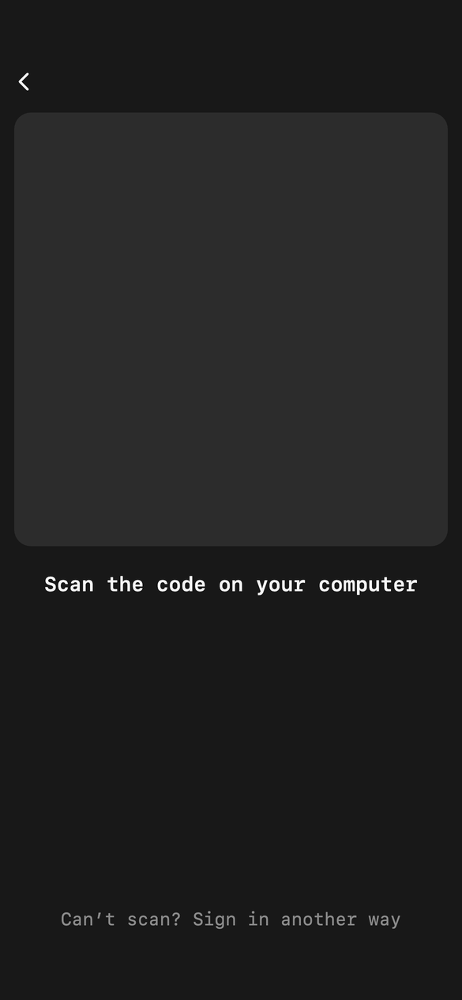
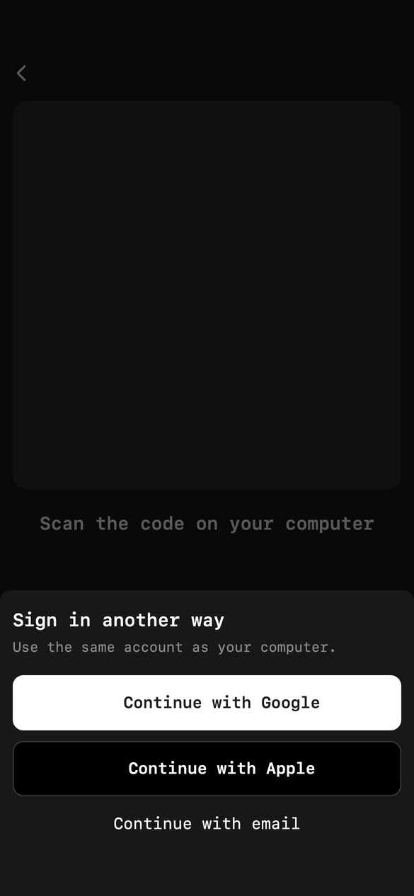
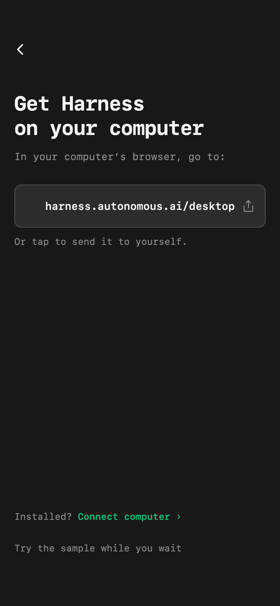
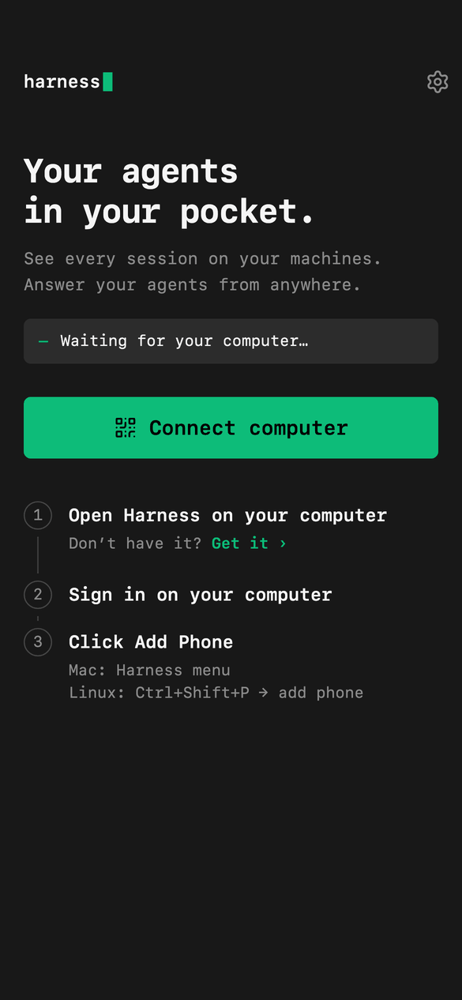
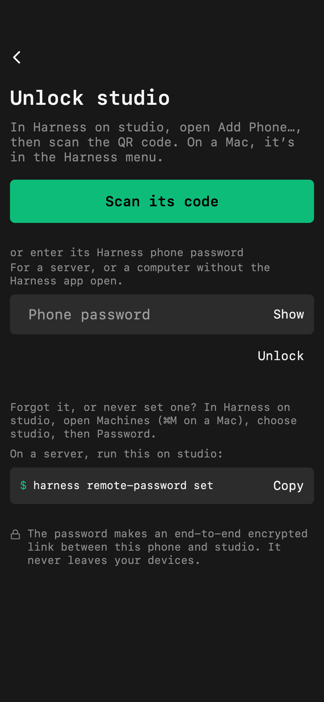
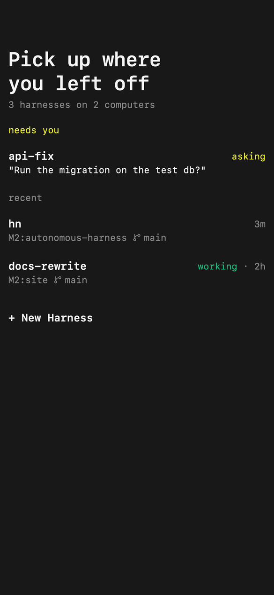
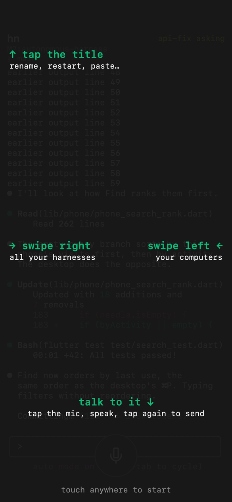

Phone onboarding
How people start with Harness on their phone. Agreed with the owner on 2026-10-12; nothing is built yet. The screens are drawn, and the names, emails and sessions in them are examples. Today's app is in the appendix.
Harness already on the computer: the focused pane's title shows one small, fixed code that gets the app. Install it, sign in with the same account, and the session in focus on the computer opens on the phone. The code goes away once a phone is linked.
New to Harness: sign in on the phone's first screen, open autonomous.ai/go on the computer, and the phone adds the computer by itself. Two soft notes as it arrives, then its first session.
1. How the best add a device
Products whose whole job is linking a person's devices, and the one that does what Harness does.
| Product | How a new device joins | What to take |
|---|---|---|
| Tailscale | Install on each device and sign in with the same account; every device then sees every other. A headless server runs tailscale up --qr and a trusted phone scans it to log the server in.
(iOS, QR) |
The account is the network. A new device is added from a device you already trust. |
| Chrome Remote Desktop | Set up the computer once, then sign in on the phone with the same Google account; the computer is in the list. If it isn't there, it's almost always a different account. (guide) | Same account = connected. Say which account, because the mismatch is the failure. |
| Orca (the reference) | Desktop settings make a QR; the phone app scans it; same Wi-Fi, with a relay as a fallback. (GitHub, App Store) | Where Harness already is. A settings-page QR is the floor, not the bar. |
| Apple Handoff | Whatever you're doing on one device is offered on the other, nearby, same account: a small icon, one tap, and you carry on. (Apple) | Offer the phone at the activity, not in a menu: "carry on with this". |
| Google Home, Chromecast | The phone notices an unset-up device nearby and offers "Set up"; setup then shows each step completing. (Chromecast, Android) | The setup comes to you, and progress is shown, not described. |
| Sonos | The app finds the new speaker; you confirm by touching the phone to it or pressing its button, and a chime says it worked. (guide) | Ownership is a physical gesture, and success has a sound. |
| YouTube on a TV | The TV shows a code; you approve it on the phone you're already signed in on. (YouTube) | The new screen shows a code; the device in your hand approves it. |
| Happy (Claude Code client) | Run happy in a terminal; it prints a QR; scan it in the app. (App Store) | Fine for people who live in a terminal; nothing for anyone else. |
2. Harness already on the computer: one code to get the app
The focused pane's title shows one small, fixed code, just before the agent and model. It's the same code on every pane and every computer, and all it does is get the app. Once a phone is linked to the account, it's gone.
⎿ +41 −12
⏺ The page is ready for review. Push it?
Light mode: the same code in the title's dark ink. No background in either mode.
| What it is | Shown | Gone |
|---|---|---|
One fixed link, autonomous.ai/app: the App Store on an iPhone, Google Play on Android. Nothing secret in it. | On whichever pane is focused, while the account has no phone. | On every computer, once a phone is linked. |
On hover: "Continue mobile onboarding on your phone. Scan to get the app. Pick it up anywhere, by voice." It names the pane in focus, so it's about the work in front of you. Size: 14.5 pt, the height of the text beside it, with rounded corners like the rest of the design system; the test page checks that an iPhone reads it in both modes. It replaces the "Your agents in your pocket" card; a second phone is still added from Add Phone, under your initial.
① iPhone Camera. Tap the link; the App Store opens on Harness.
② App Store. Get, then Open.
③ The same session, live. "Yes, push it."
The app opens on its first screen (section 3), and the person signs in with the computer's account. That account already has the Mac, so after a brief "MacBook Pro is ready." the phone opens the session in focus there. There's no "go to your computer" step.
3. New to Harness: set up your first computer
One picture fills in as you go, in the same place on every screen: three computers around your phone. You sign in once, on the phone. The phone adds the computer, and two soft notes say it has arrived.
Manage all your agents on all your computers from your phone.
 Continue with Google
Continue with Google Continue with Apple
Continue with Apple① Welcome. Everything lit: the promise. Sign in right here, and it moves on by itself.
On your computer, go to
② Your computer. The laptop breathes while the phone looks for it. The address is the button: it sends the link (AirDrop first).
MacBook Pro is ready.
The Mac joins. About two seconds: the laptop lights, two soft notes, and the headline says so. Then the session opens by itself; a tap goes sooner.
③ The session. The one in focus on the Mac. On a new Mac: OpenCode with a starter task typed in, not sent.
Which session the phone opens: it follows the computer
The desktop's own onboarding decides the first tab (desktop 1.2.60, #1075, #1077). The phone has no logic of its own: it opens the session in focus on that computer and says one line over the mic. Every other session is a swipe right.
New to coding agents. OpenCode with the starter task typed, not sent.
Already uses Claude Code or Codex. Their latest conversation, where they left it.
Agents, but no past sessions. A fresh session, at an empty prompt.
| Who | The desktop's first tab | The phone opens | Over the mic |
|---|---|---|---|
| New to coding agents | Downloads OpenCode, Codex and Claude Code during its tour. Tab 1: OpenCode with a starter task typed, not sent; Codex and Claude Code beside it on their own sign-in screens. | OpenCode, the task waiting | Send it, or say anything. |
| Has Claude Code or Codex but isn't signed in to them | Same as above: OpenCode first, with the starter task (#1077). | OpenCode, the task waiting | Send it, or say anything. |
| Already uses Claude Code or Codex | Tab 1: their most recent Claude Code and Codex conversations, resumed; tab 2: the next three. | Their most recent conversation, history and all | Pick up where you left off. |
| Has agents but no past sessions | A fresh session for each agent they have. | That agent, at an empty prompt | Say what to build. |
| Harness already on the computer | Nothing changes; the pane's code got them the app. | The session in focus on their most recently used computer; every other is a swipe right | Talk to it. |
The Mac joins, frame by frame (about two seconds; a tap skips it)
Reduce Motion: no packets or rings, and every change is a 200 ms fade. Muted: no sound; the haptics stay. If the app is in the background when the Mac joins, it plays this the next time it's opened.
On the computer
Harness for Mac
Your phone is waiting for this Mac.
Download for Macautonomous.ai/go on the computer: the same drawing, with this Mac as the one waiting, and one button. The page picks the download for the computer's system (it does today, #1109).
Handoff: while step ② is open, the page also appears in the Dock of a nearby Mac signed in to the same Apple account. One click, nothing typed.
Nobody signs in on the Mac. During its tour, the phone waiting at step ② finds it on the same Wi-Fi and adds it to the account. The tour ends on ✓ Added by Ada's iPhone, the sign-in page is skipped, and the first workspace opens. Someone who starts on the desktop still gets the sign-in page (decided 2026-10-11), and so does a Mac the phone can't see.
Every word
| Screen | Headline | Body | Button | Quiet line |
|---|---|---|---|---|
| ① Welcome | Manage all your agents on all your computers from your phone. | none | Continue with Google · Continue with Apple | Continue with email |
| ② Your computer | On your computer, go to | none | autonomous.ai/go ⇪ | none |
| Under the picture, ② | Looking for your computer▌ | |||
| /go | Harness for Mac | Your phone is waiting for this Mac. | Download for Mac | |
| The Mac joins | MacBook Pro is ready. | none | none | none (about two seconds; a tap skips it) |
| ③ The session | Over the mic, once: Send it, or say anything. (The line depends on the session: see the table above.) | |||
| Desktop pane title, on hover | Continue mobile onboarding on your phone | Scan to get the app. Pick it up anywhere, by voice. | ||
| Mac, end of its tour | ✓ Added by Ada's iPhone | then the first workspace; no sign-in page |
Type and space: 35 pt side margins and one left edge on every screen. The headline is 22 pt mono semibold, up to three lines, at the same height on every screen. The picture sits in the middle and never moves. Buttons are 52 pt; the quiet line is 13 pt. Between screens only the words change, rising 8 pt in 250 ms; the picture only changes state.
Counts: 1 tap on the phone (Continue with Google), 3 without Handoff (the address, then AirDrop). On the Mac: open the page, Download, install, open. No sign-in on the Mac, no account to match, no page dots, nothing to tap after step ②.
Nothing else on these screens. No sample link, no Undo, no fallback line. A Mac the phone can't see (another network) shows its own sign-in page after its tour, and the phone finds it once it's signed in. A Mac added by mistake is removed from Computers.
Left out on purpose: page dots; the word "network" in the app; any sound but the one; a "looking" with no way out; a button whose only job is to hand over the payoff; showing an Apple private-relay address; taking the sign-in page away from people who start on the desktop.
4. More computers, more phones
| Adding | How |
|---|---|
| Another computer | On the phone, Computers ▸ Add computer is step ② again: open autonomous.ai/go on it, and the phone adds it. |
| A server with only the command line | harness login shows a code; the phone approves it (Settings ▸ Sign in a computer, there today). |
| Another phone | Install and sign in with the same account. Add Phone, under your initial on the computer, shows a code that gets the app. |
Signing in is what makes the account's devices trust each other (the device key log), so there's no pairing or password anywhere.
5. Every route, counted
Taps and clicks from the moment someone decides to the session live on the phone. Waiting (downloads, the desktop's tour) isn't counted.
| Who | Steps | Phone | Computer |
|---|---|---|---|
| Harness on the computer, no phone app | Camera at the pane's code · Get · Open · Continue with Google → the session | 4 (2 are Apple's) | 0 |
| Harness on the computer, phone app installed | Open the app · Continue with Google → the session | 2 | 0 |
| New to Harness | Phone: Continue with Google. Computer: the page from the Dock (Handoff) · Download · install · open; the phone adds it during the tour → the session | 1 (3 without Handoff) | 4, no sign-in |
6. Against today, and against Orca
| Today (1.0.3) / Orca | This plan | |
|---|---|---|
| Where the phone is offered on the desktop | A dialog in a menu (Add Phone; Orca: settings) | In the title of the pane you're in, one small fixed code, until a phone is linked |
| What the code does | Signs in and pairs, then a list (Orca: pairs) | Gets the app; signing in with the same account does the rest |
| The iPhone Camera on the code | a dead-end web page | the App Store |
| Someone with nothing on a computer yet | "Go to your computer", then nothing | A picture that fills in as you go: one tap to sign in, the computer added by the phone, two notes when it arrives |
| Signing in on the new computer | Again, in a browser, hoping it's the same account | None: the waiting phone adds it |
| First screen after connecting | A list, four tips, then a notification prompt | The session in focus on the computer, and one line over the mic |
7. What to watch
The code's size and colour. At the height of the text it's about 3 mm, so the phone has to come close; in dark mode it's inverted (light on dark), which the QR standard allows but not every scanner reads. A fixed link is short (21 squares a side), which helps. The test page settles both.
A new computer is added by being nearby. The waiting phone adds a new Harness on the same network that nobody has signed in to. A stranger installing Harness on the same café Wi-Fi in those minutes could be added; the phone names the computer it added, and Computers removes it.
Which session is "in focus". The desktop tells only its own computer which pane has focus. The phone already sorts sessions by when they were last used or opened, so the desktop marks a session as opened when its pane takes focus, and the phone opens the most recently used one. Nothing new goes over the relay.
No push yet. The phone has no push notifications (no APNs or FCM, no background mode), so it notices the computer while the app is open, and catches up when it's opened again.
Handoff needs the same Apple account on the phone and the Mac. Without it, the address is sent by AirDrop or typed.
The short addresses. autonomous.ai/go and autonomous.ai/app fall through to the home page today (a 307 to www.autonomous.ai), so both are free: two redirects on the main site.
8. What it takes
| Where | Change | Size |
|---|---|---|
| Desktop | The fixed code on the focused pane's title, before the agent and model, with its hover line; hidden once the account has a phone (the desktop already reads the account's devices); the "Your agents in your pocket" card removed; a session marked as opened when its pane takes focus; on a new computer, announcing itself during the tour, and skipping the sign-in step when a phone adds it ("✓ Added by Ada's iPhone"). | Medium |
| Backend | A new computer that nobody has signed in to announcing itself, and a waiting phone on the same network adding it to the account. | Medium |
| Phone | The welcome with sign-in; "On your computer, go to" with Handoff; the picture and its motion, the "ready" moment and its sound; Sign in with Apple in the app (and the backend accepting its token); adding a new computer found on the same network; opening the most recently used session; the line over the mic. | Days |
| Website | autonomous.ai/go to the download for this computer (exists as harness.autonomous.ai/desktop); autonomous.ai/app to the App Store or Google Play, by device. | Small |
Where the phone code lives: the store builds come from feat/mobile-ios-android, which is 131 commits ahead of main. It lands on main first, then this work goes in small PRs.
Later: a personal download link and a "Downloading on your Mac" signal; emailing the link (the backend sends no email today); push notifications.
Tested by the real thing, on a real iPhone and a fresh Mac (the VM rig), for each route in section 5, timed, with every hesitation noted.
Decided
1. Harness already on the computer: one fixed code on the focused pane's title gets the app, and it's gone once a phone is linked.
2. New to Harness: three screens and a brief "ready" moment; sign-in on the first screen, Google first.
3. Nobody signs in on a new computer: the waiting phone adds it.
4. The phone opens the session in focus on the computer, and says one line over the mic.
5. Nothing else on the setup screens: no sample link, no tips, no notification prompt, no fallback lines.
Still open
The code's size, and whether an iPhone reads the inverted dark-mode code: the test page.
Landing feat/mobile-ios-android on main, with the branch's owner.
The two redirects on autonomous.ai, with whoever owns the main site.
Appendix: today (1.0.3)
Since 2026-10-07 the front door has been cut to one button; the owner's calls of 10-08 and 10-09 are recorded in phone_welcome.dart. The scan already signs in and connects in one go (#387).
What's rough is the homework on the first screen and everything after the scan.






harness remote-password set: jargon, and mostly unneeded now that signing in makes every machine trust the phone (device key log).

The code isn't a way in from the Camera yet. Pointed at the Mac's code, the iPhone Camera opens harness.autonomous.ai/pair in Safari. Neither main nor the release branch
has universal links (no associated domains in mobile/ios, no app link in the Android manifest), and that page says "Scan this from the Harness app" with no App Store link.
The two apps disagree on a word. The Mac's Add Phone says "On your phone, open Harness and tap Pair computer"; the phone's button is Connect computer.
The desktop never shows the phone during setup. The tour's phone slide is a picture with no code or link. Add Phone is in the Harness menu, the avatar menu (#1188) and the
"Your agents in your pocket" card, which shows after the first sign-in.